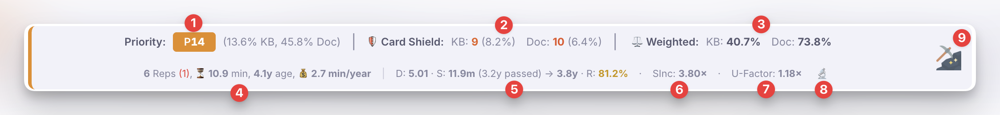
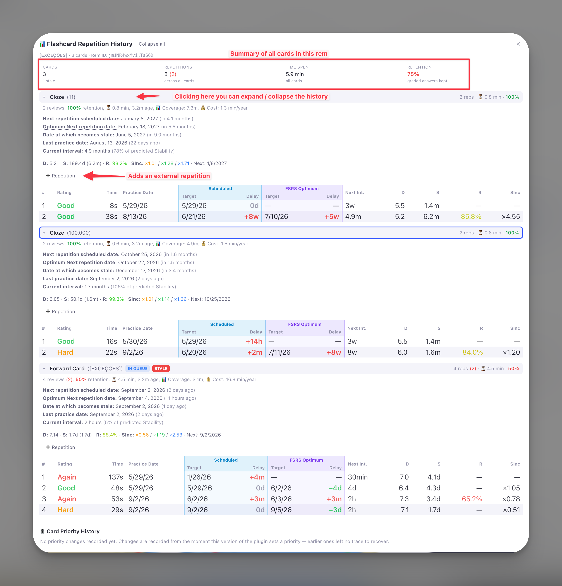
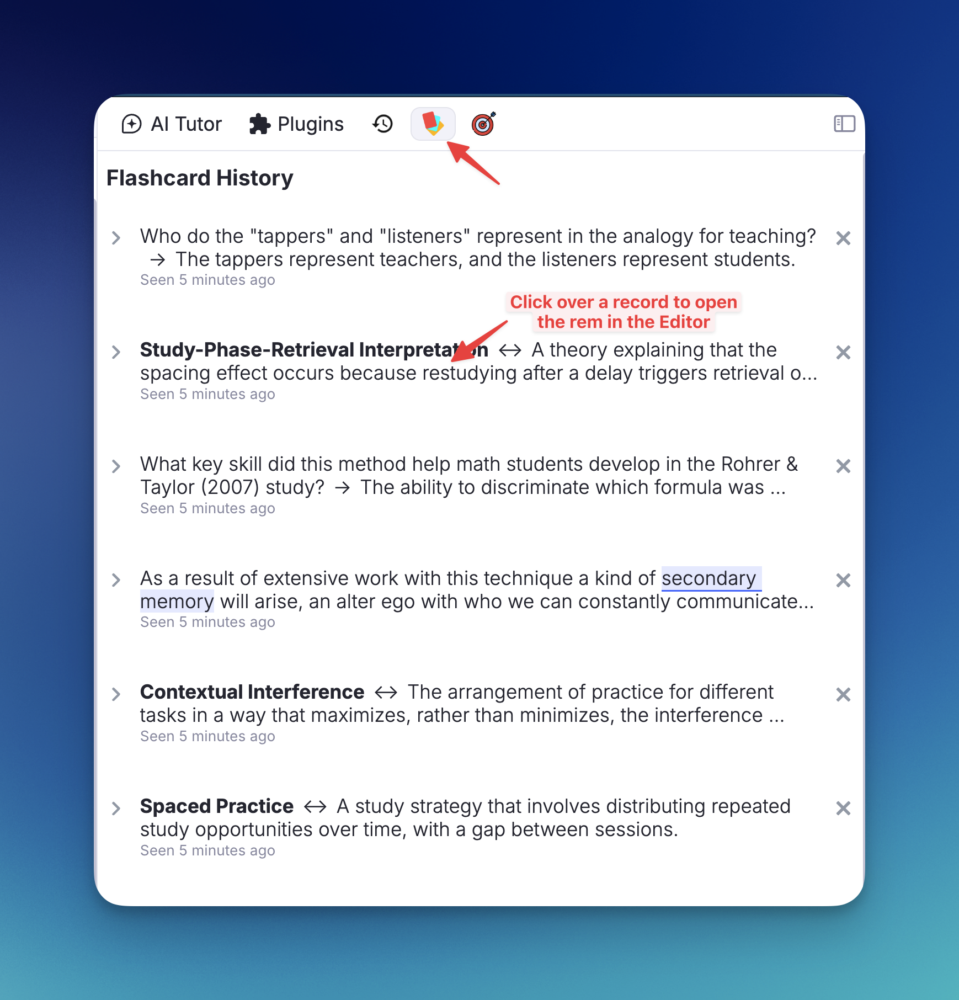
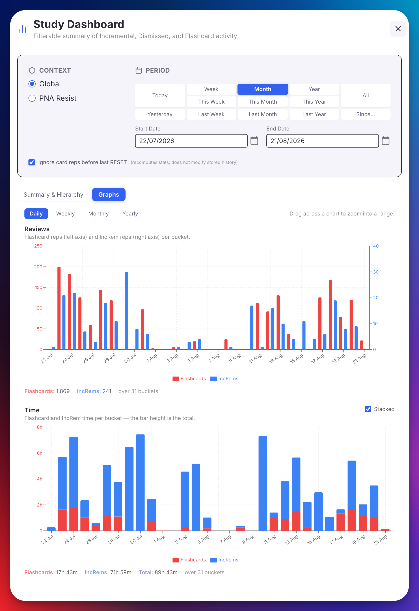
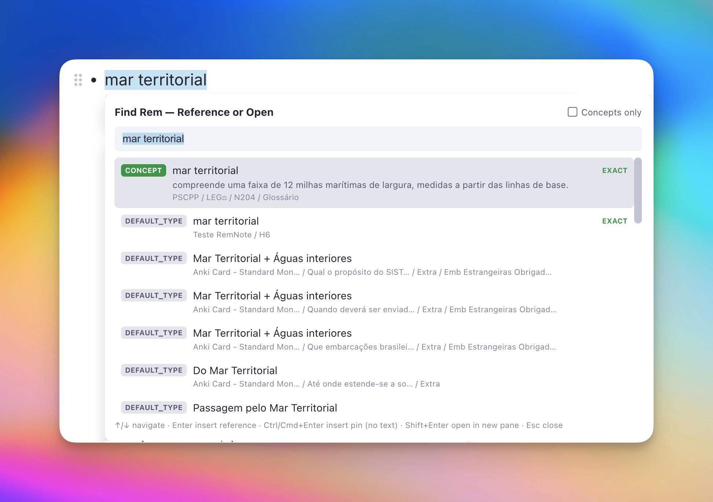
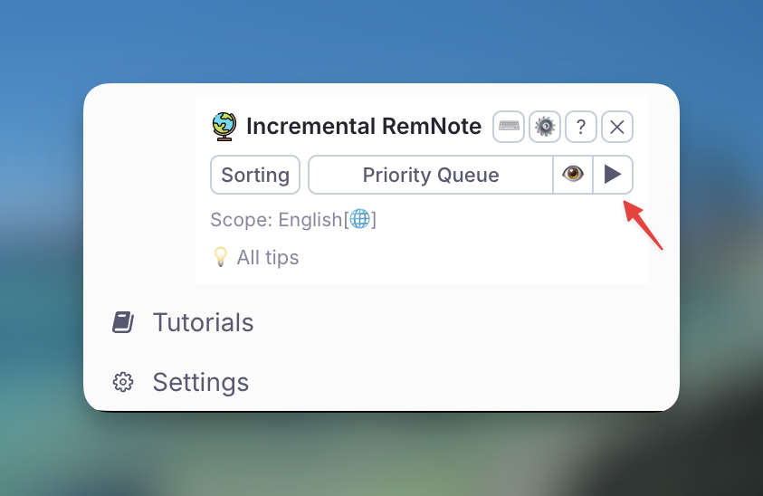
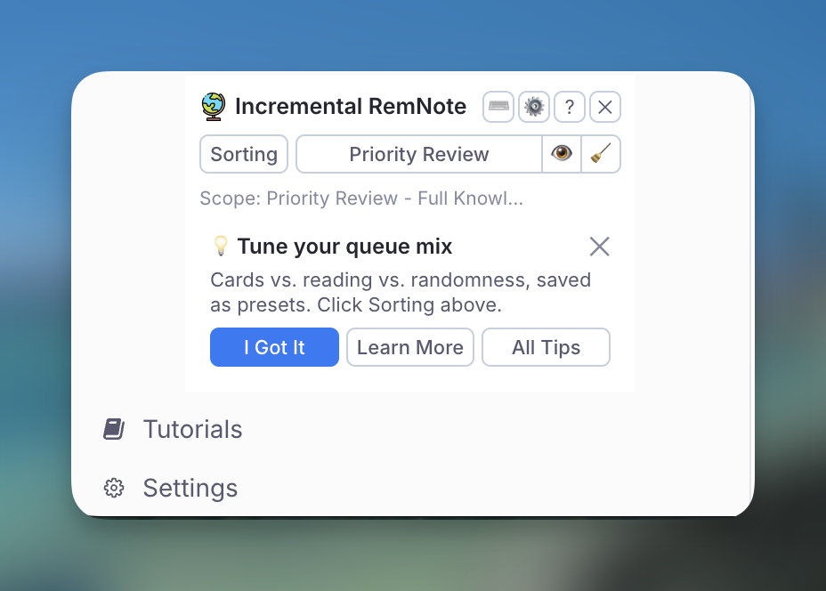
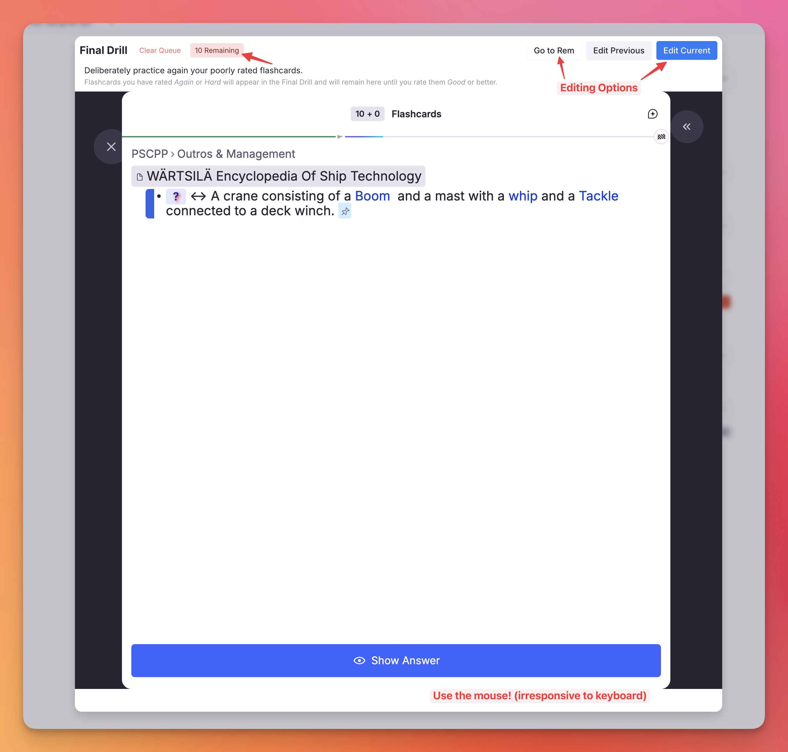

Plugin Widgets Reference¶
This page serves as a comprehensive visual and functional guide to every widget in the Incremental RemNote plugin.
1. In-Queue Widgets¶
1.1. Card Info Bar¶
(Flashcards only)
(Formerly Card Priority Display — renamed as its scope grew beyond priority to full review, memory, and scheduling stats. Older Changelog entries refer to it by the old name.)
Displayed immediately below flashcards in the queue, this widget shows the card's priority, review statistics, and FSRS memory state.

Features:
- (1) Priority Indicator: Shows the card's priority value (explicit, inherited, or default) with a color-coded badge.
- (2) Card Priority Shield: A real-time counter showing how many of your highest-priority cards are still due. See Priority Shield for details.
- (3) Weighted Shield: An exponential priority-weighted metric (if enabled in settings) showing the fraction of your total learning workload that has been processed. Clicking it opens a detailed percentile bucket breakdown. See Weighted Shield for details.
- (4) Reps & Time: Total number of reviews (with lapses in red parentheses), cumulative time spent on this card, the card age (time since first review), and the cost (time spent per year of age or coverage). Hover over it for an explanatory tooltip.
- (5) FSRS DSR Analytics: Difficulty (D), Stability (S), and Retrievability (R) computed by the plugin's embedded FSRS v6 engine. The exact time passed since the last review is shown next to Stability, and an arrow points to the stability a Good rating would leave the card with (
S: 2.5y (1.3y passed) → 4.2y) — followed by the interval that stability really converts to ((int. 1.7y)) whenever your Requested Retention is not the 90% default. Hovering over this section reveals the projected Next Difficulty for all four grading options (Again, Hard, Good, Easy). - (6) SInc (Stability Increase): The multiplier showing how much stability will grow after a successful review. Hover to see projections for Hard / Good / Easy.
- (7) U-Factor (Used-Interval Increase): The multiplier showing how much bigger your next interval would be than the interval you actually just used — the real time elapsed since your last review — if you press Good. Where SInc compares the new stability to the current stability (
S_new / S_old), the U-Factor compares the newly-scheduled interval to the gap you just cleared (new interval / used interval), answering the more grounded question "how much longer can I wait now than I waited this time?" This mirrors the U-Factor metric from the companion Flashcard Repetition History plugin. A high U-Factor (e.g. 3×+) means recall went well and the algorithm is comfortable pushing the next review much further out; a low U-Factor (e.g. 1.2×) means the interval is barely growing. Hover to see the U-Factor for Hard / Good / Easy alongside the interval each would schedule. Hidden when there's no usable elapsed interval (e.g. a card reviewed moments ago). The interval it divides by is the one you will really get, which depends on your Requested Retention: at anything other than the 90% default a second value appears in parentheses —U-Factor: 3.11× (3.30×)— the first being what your scheduler gives you, the second what it would be at 90%, where the interval equals the stability. - (8) 🔬: Opens the Flashcard Repetition History popup
- (9) Incremental Rem Status Indicator: An icon displayed on the right border whenever the current card is also an Incremental Rem, providing instant visual feedback of its dual-status.


1.2. Queue Toolbar Priority¶
Installed directly into the native RemNote Queue Toolbar, this widget guarantees that the absolute priority of the current item (both Flashcards and Incremental Rems) is persistently visible during review.
Unlike the Card Info Bar, which lives at the bottom of flashcards and can be easily scrolled out of view on long documents, the Queue Toolbar Priority widget is anchored to the top toolbar, making it accessible instantly.
- Supports both types: Shows absolute priorities for both Incremental Rems (e.g.
P10) and Flashcards (percentile rank - relative priority - is shown on hover and also indicated by the badge color). - Opt-in setting: Controlled via the
Display Queue Toolbar Priorityplugin setting (enabled by default).

In the Beautiful queue variant¶
In RemNote's Beautiful queue variant (Queue Menu → Queue Variant) the badge sits in the top-right corner of the card, in the blank space above the breadcrumbs, rather than in the top bar — the card layout itself is unchanged. The No Inc Rem countdown moves there with it. Switching back to Compact returns both to the toolbar.
1.3. Answer Buttons Info Bar¶
(Incremental Rems only) An info bar shown below the answer buttons when reviewing an Incremental Rem in the queue. It displays review stats, the Priority Shield counter, and a 📊 button to open the IncRem Repetition History.

1.4. Document Notes Sidebar¶
(PDF and HTML Incremental Rems, including PDF/HTML Highlights)
When reviewing a PDF or HTML Incremental Rem, you can click the 📝 Document Notes icon in the document's top bar (next to the breadcrumbs) to open the current document's Rem in the Right Sidebar.
This dedicated widget allows you to seamlessly view and edit the document's notes, add child rems, and organize your thoughts side-by-side with the reading material without losing your place in the queue. It intelligently synchronizes with your queue state, showing the document notes only when an applicable IncRem is being reviewed, and gracefully displaying an empty state during flashcard turns.
Highlight Support: When reviewing a PDF Highlight or HTML Highlight Incremental Rem in the queue, the sidebar automatically discovers all Incremental Rems associated with the same source document (using the same discovery mechanism as the Bookmark Popup). If only one IncRem is found, its notes are shown directly. If multiple IncRems share the same source PDF/HTML, a selector is presented so you can pick which IncRem's notes to view. A "← Switch" button lets you return to the selector at any time.


1.5. PDF Switcher¶
(Reader top bar — only when the Inc Rem has 2+ PDF sources)
A compact PDF dropdown that appears in the Reader's top bar, just to the right of the 📝 Document Notes icon. It lists every PDF source attached to the current Inc Rem, with ★ marking any source tagged #preferthispdf.
Behaviour: selecting a different PDF pins it as the active PDF for this Inc Rem (synced storage under active_pdf_for_<remId>) and re-renders the Reader against the new PDF immediately — the queue card stays put, only the PDF view swaps. Bookmark auto-scroll, page controls, and any subsequent reading-time records all follow the new pin. The pin is persistent across sessions and is honoured by the queue, the Editor Review Timer, the PDF Control Panel, and the Priority Editor.
When hidden: for single-PDF Inc Rems (selector is unnecessary), and for pdf-highlight / html-highlight action types (the highlight is tied to a specific PDF; switching would orphan the queue card).
📖 Full documentation: Multiple PDF Sources — covers the full resolution chain (pin → #preferthispdf → first PDF) and every surface that exposes the switcher (queue Reader, Editor Review Timer, Execute Repetition popup, PDF Control Panel, Priority Editor).
2. History & Progress Tracking¶
2.1. Review History popups (for individual items/branches)¶
2.1.1. Flashcard Repetition History¶
(Flashcards only)
A detailed popup covering every card of one Rem, enriched with FSRS analytics. Open it via the 🔬 button on the Card Info Bar, or press Ctrl+Shift+H on the Rem — in the queue or in the editor. Press Esc to close.

Rem-wide totals (header) — four tiles summing every card: Cards (with how many are new, or stale — overdue by more than twice their last interval), Repetitions (with total lapses in red parentheses), Time Spent, and Retention in the Practiced Queues colours. Retention is pooled — remembered ÷ graded across all cards — not an average of the per-card figures, so a two-answer card cannot swing it as hard as a forty-answer one.
One collapsible section per card. A Rem with five clozes plus forward and backward is seven histories, so each card is a section you open and close, named the way RemNote's own Bullet Information panel names it:
- Card identifiers —
Forward Card (…)andBackward Card (…)show the side the card asks;Cloze (…)shows the clozed words themselves. Rem references inside the text resolve to[the referenced Rem]and reference pins to 📌, so a cloze over a reference readsCloze (a [Carena])rather than losing the word that identifies it. - Collapsed — the four tiles from RemNote's panel: Next Practice, Last Practiced, Repetitions (lapses in red, retention underneath) and Time Spent.
- Expanded — the full analytics below.
- Sections start collapsed when the Rem has more than one card, except the card you were reviewing (badged
IN QUEUE); a single-card Rem opens straight into its table. Expand all / Collapse all is in the header, and↑/↓walk the sections withEnterto open the selected one.
Per-card analytics (expanded):
- Total Reviews & Time: review count, lapses, retention, cumulative time spent, card age, coverage (time from first to next scheduled review), and cost (ignoring any reviews that occurred before a manual Date Reset).
- Date Summaries: Next repetition scheduled, optimum next repetition (Last practice + Stability), date the card becomes stale (Last practice + 2× Interval), and current interval with stability ratio.
- Retrievability Gradient: R is displayed with a dynamic color gradient — red (≤ 70%) through green (100%).
- SInc per grade: Color-coded Stability Increase projections for 🟠 Hard / 🟢 Good / 🔵 Easy with hover tooltips showing projected stability.
-
History Table: Every review with rating (color-coded), response time, practice date, next interval, per-step D & S, SInc ratio — and two target dates side by side, in tinted column groups:
- Scheduled (sky) — the date RemNote actually scheduled the review for, and how far off you were.
- FSRS Optimum (violet) — where FSRS would have put it: the previous review's date plus the stability computed then, i.e. the day recall was predicted to reach 90%. Blank for the first review, and after a RESET.
Comparing the two Delay columns is the point of the pairing: green in the FSRS column means you reviewed sooner than the model needed, red that recall had already decayed past the target. Delays are written compactly (
+3d,−2w,+1.4y) in the early/late colours, with the full phrasing on hover. - Color-Coded Markers: Visual markers distinguish standard reviews, queue reschedules (📅), editor command reviews (⌨️), and manual date resets.
➕ Repetition (inside each open card section) — records a review of that card done outside the queue: you tested yourself aloud, on paper, or in conversation, and the only way to tell RemNote used to be to find the card in a queue and answer it there. Press it and the four grade buttons appear, each carrying the interval FSRS projects that grade would buy — including Again, whose projection uses the post-lapse formula, so you can see what a lapse would actually cost before pressing it. Sample use case: while in the Editor, you realize you forgot the answer of a card that has a large interval and is not yet due. Tell it to RemNote, so that it can be rescheduled appropriately.
Three things to know about the figures:
- It cannot be backdated. Unlike the IncRem popup's ➕ Session, the SDK takes a grade and nothing else, so the repetition is dated now. The panel says so.
- The intervals are a projection, not a promise. They come from this plugin's FSRS model and your configured weights; RemNote's own scheduler decides the date it writes, and the two can differ for the same reasons the Optimum Next repetition date line above already lists — a non-FSRS scheduler, different weights, fuzz, load balancing.
- Again † is where FSRS resumes, not what you will see next. If your scheduler has Relearning Phase Steps set (Settings → Schedulers → Relearning Phase, e.g.
1h), RemNote walks those steps first. They are extra repetitions that confirm you have relearnt the card, and the scheduler does not count them — so a card whose Again projection reads6wis shown by RemNote's own Forgot button as1 hour. Both are right, a relearning step apart.
🎚 Card Priority History (footer) — every priority this Rem has held, newest first, with the change (60 → 45), the gesture behind it and the source recorded alongside. Rem-level rather than per-card, because the cardPriority powerup tags the Rem and all its cards share the value. See Priority history for what is recorded and how bursts are collapsed.
♾ Incremental History (header button) — appears when the Rem is also an Incremental Rem (or a dismissed one), and switches to its history. The reverse button lives there.
📖 Full documentation: Card Stats & FSRS Integration
2.1.2. IncRem Repetition History & Aggregated View¶
(Incremental Rems only)
Two interconnected popups for Incremental Rems, both accessed via Ctrl+Shift+H:
- Single History — triggered on an individual IncRem (in the queue via the 📊 button, or in the editor via
Ctrl+Shift+H). Shows the Rem's full repetition log: date, time spent, scheduled interval, priority at the time of review, and event type markers (📅 reschedule, ⌨️ editor review, etc.). Repetition rows carry the wall-clock time under the date, and the event banners (▶ Made Incremental, ⏸ Dismissed, 📅 Rescheduled in Editor, ✏️ Manual Date Reset) show theirs next to it — several lifecycle events on one day stay distinguishable. - 📝 Notes & context sub-lines — entries carrying a review note show it under the row (📝, full text); entries with an automatic reading-context snapshot show a compact line like
p.57 of 40–80 · Book.pdf · 🔖 "bookmark…"— the page you were on at that rep, so your reading trajectory across sessions is visible. Event banners (Dismissed, Rescheduled in Editor, …) show their note the same way — a dismissal reason lives right on the dismissal marker. - PDF reading-progress footer — when the Rem (active or dismissed) reads from a PDF with a page range set, a footer shows the PDF name, the page range, your current page, the degree of processing (
% read, with a progress bar), and an estimated remaining time (extrapolated from the total time spent and the degree of processing reached). The percentage and estimate are omitted for open-ended ranges (start–∞), where there's no finite end to measure against. - 🔖 Read-point footer — when the Rem has a read point set, a footer shows the path from the Rem itself down to the bookmarked descendant (
Chapter › Section › Read point), with the date it was set. Every segment is clickable and navigates to that Rem. It works for dismissed Rems too, and if the read point has since been moved out of the outline the footer says so and shows its nearest ancestors instead. - 🎚 Priority change banners — a priority changed without a review or a reschedule (the
Alt+Ppopup,Ctrl+Opt+↑/↓, an inline edit in a list view) files its own blue banner reading⚡ Priority 60 → 45 · Quick priority change — Sep 4, 2026 · 14:30. Hover it for whether that made the item more or less important. It counts for neither your statistics nor the scheduler — it is a marker, like ▶ Made Incremental. A reschedule or a review that also set a priority does not produce one: the entry it already writes records the new priority itself. Nor does a priority chosen within a minute of creating the Rem — that goes into the ▶ Made Incremental marker. - 🔀 Transferred banners — a Rem whose incremental data was transferred from another Rem shows a teal banner reading
🔀 Transferred from "…" — Sep 5, 2026 · 14:42. Everything above it was reviewed on the Rem it names, not on this one; hover it for the full name when it is long. Like ▶ Made Incremental it is a marker — it counts for neither your statistics nor the scheduler. - 🃏 Cards History (header button) — appears when the Rem also generates flashcards, and switches to the Flashcard Repetition History for all of them. The reverse button lives there.
- ➕ Session — recording study done outside RemNote — see Recording and correcting records below.
- ✏️ / 🗑 per record — hover a review row to edit or delete it; see the same section.


- Aggregated History — triggered on a Document or Folder that contains incremental descendants. Displays a hierarchical tree of all child IncRems with aggregated metrics (total reps, total time, item count) for each node and its subtree. Nodes whose history carries review notes show a 📝 indicator (with a count when more than one) — hover to read them, dated, newest first. A toggle button in the header lets you switch between Single and Aggregated views.

How Ctrl+Shift+H routes¶
The command picks the view from what the Rem actually is, in this order:
- An active Incremental Rem → its own history, cards or not. When it also has cards, the 🃏 Cards History button carries you across.
- Any Rem with flashcards → the Flashcard Repetition History, covering every card of the Rem. This works in the editor as well as the queue — pressing the shortcut on an ordinary flashcard in your outline used to report that there was no history to show.
- A dismissed Rem with no cards → its preserved history.
- A Document or Folder with incremental descendants → the Aggregated view.
Both single-Rem popups link to each other, so a Rem that qualifies for two of these is never a dead end whichever one it opens.
Recording and correcting records¶
The Single History view is not read-only: a repetition log is only as useful as it is complete, and a good deal of studying happens away from RemNote — a paper read on a train, a chapter in the physical book, a lecture watched elsewhere. Both actions below work on active Incremental Rems and on dismissed Rems (where the history lives on the Dismissed powerup).
➕ Session (header button) — records a study session after the fact. You give it a date, the end time of the session and the total time spent (hours + minutes), plus an optional note. The entry appears in the log with a 📖 indicator as an external session, and counts towards the Rem's reps, its total time, the Study Dashboard and the scheduler's repetition count — exactly as an in-app editor review (⌨️) does.

Whether the schedule moves depends on where the session lands in the log:
- The session is the newest record (or the Rem has no records yet) — the dialog offers Reschedule next repetition, prefilled with the interval the scheduler would give this Rem right now, counted from the session's date. This mirrors Review in Editor (
Ctrl+Shift+J): you studied it, so it gets scheduled forward. Untick the box to record the time without moving the date. - The session predates the newest record — the schedule is left untouched and the dialog says so. A backdated entry is bookkeeping; it must not overwrite a due date that later reviews have already set.

The session's end time cannot be in the future. Its early/late status is computed against what was actually due at that moment — taken from the next-repetition date stamped by the last record preceding it — so a backdated entry reads correctly rather than being measured against today's due date.
✏️ Edit / 🗑 Delete (hover a review record) — the two buttons appear at the right edge of a row when you hover it, on reviews only: queue reps, editor reviews (⌨️), queue reschedules (📅), imported flashcard reps (🃏) and external sessions (📖) — the same set that counts towards your study time.
Event banners (▶ Made Incremental, ⏸ Dismissed, 📅 Rescheduled in Editor, ✏️ Manual Date Reset, 🎚 Priority change, 🔀 Transferred) are read-only. The dialog behind those buttons edits a date, an end time and a duration, which says nothing about a marker; and the markers are exactly the entries the plugin reads by position — the scheduler counts repetitions since the last ▶ Made Incremental, and 🔀 Transferred records where a history came from — so hand-editing one would quietly rewrite an interval progression or the provenance of the log.

Edit changes the date, end time, total time and note of an existing record; early/late status is recomputed, and the log is kept in chronological order. Editing never changes the schedule. Delete asks for confirmation first, reporting the study time that will disappear from the Rem's totals. Deletion cannot be undone.

2.2. Last seen items history in Right-Sidebar¶
2.2.1. Incremental Rem History¶
(Right Sidebar)
A distinct widget that serves as a chronological log of all your Incremental activity — unlike the popups above which show per-item review details, this widget tracks what you saw and when, now including creation and dismissal events.
- Tracks up to 200 items, filtered by the current Knowledge Base.
- Shows a unified timeline of review sessions, creation events, and dismissals sorted chronologically (most recent first).
- Each entry shows a color-coded pill badge: 🟢 Created (the Rem was first made Incremental), 🟣 Reviewed (a review session), or 🔴 Dismissed (the Rem was dismissed).
- When a Rem is dismissed during a review (queue / editor timer Dismiss button, or
Ctrl+Din the queue), the entry shows both the 🟣 Reviewed and 🔴 Dismissed badges side by side. A standalone dismissal (e.g.Ctrl+Din the editor with no review) shows only the 🔴 Dismissed badge. - Each entry also shows an item-type badge — 📄 PDF, 🖍️ PDF Extract, 📑 PDF Note, 🌐 Web, 🔖 Web Extract, ▶️ YouTube, ✂️ Video Extract, 🎬 Video or 📝 Rem — the same labels the IncRem List & Main View uses, so you can tell at a glance whether a line in the log was a PDF page you read or a note you extracted. It is resolved in the background for the rows on screen and appears a moment after the list does; entries whose Rem no longer exists simply have none.
- Each entry also shows a priority badge (colored by KB-wide percentile) — click it to edit the IncRem's priority with an inline slider, without leaving the sidebar.
- Searchable by text content; shows "seen X ago" (reviews), "created X ago" (creation events), or "dismissed X ago" (standalone dismissals).
- Useful companion to the History and Final Drill plugin.

2.2.2. Visited Rem History¶
(Right Sidebar)
A chronological log of the Rems you have navigated to in the Editor. Helps you quickly jump back to documents you were just working on.
- Tracks up to 200 items, filtered by the current Knowledge Base.
- Searchable by text content with multi-word query support.
- Each entry can be expanded and edited inline in the sidebar.
📖 Full documentation: Visited Rem History

2.2.3. Flashcard History Sidebar¶
(Right Sidebar)
Records the chronological history of every flashcard reviewed in the queue (cluster-aware: each sibling in a card cluster is logged individually as it becomes visible).
- Searchable by both front and back text of cards.
- Click any entry to open the Rem in the Editor.
- Holds up to 999 entries, filtered by current Knowledge Base.
- Each entry shows a priority badge next to the rating badge — click it to edit the card's priority with an inline slider, without leaving the sidebar.
📖 Full documentation: Flashcard History


3. Prioritization & Sorting Widgets¶
3.1. Full Priority Widget¶
Shortcut: Opt+P (or /Prioritize, or the Change Priority button in the queue)
The comprehensive priority interface. Context-aware: the sections it displays adapt to what the focused Rem is.
Sections (shown based on Rem type):
| Section | When shown | What it controls |
|---|---|---|
| 📖 Incremental Rem | Rem has the incremental powerup |
The IncRem's reading queue priority (0–100) |
| 🎴 Flashcard Priority | Rem has its own flashcards | The cardPriority powerup value for those cards |
| 🌿 Inheritance Priority | Rem has neither (or IncRem + no cards) | A cardPriority anchor for descendant flashcards to inherit |
Each section includes an absolute slider (0–100), a color-coded relative percentile rank within the current scope (KB-wide or document), and an ancestor context chip showing the nearest ancestor with a priority.
Conflict handling: When a Rem is both an IncRem and has flashcards with different priorities, the widget warns you and offers one-click sync options ("Use IncRem priority for both", "Use Card priority for both", or "Save both as-is").
Clear Card Priority button: When only the Inheritance Priority section is shown and the Rem has no flashcards of its own, a Clear Card Priority button appears. This removes the cardPriority inheritance anchor from the Rem in a single click — the only in-widget path to do so without manually deleting the tag in the editor. The popup closes instantly (fire-and-forget); the actual powerup removal runs in the background tracker.

3.2. Light Priority Widget¶
Shortcut: Ctrl+Opt+P
A zero-lag alternative that opens instantly by skipping expensive KB-wide calculations. Provides absolute-priority sliders for both Incremental Rem and Flashcard priorities, with keyboard arrows and acceleration for rapid adjustment. Ideal for routine adjustments on mobile, web, or during fast review sessions.

3.3. Priority & Interval Popup¶
Triggered by: Extract with Priority (Opt+Shift+X), Create Incremental Rem (PDF/web highlight menu), Toggle Incremental Rem (document menu)
A combined popup that appears automatically when a new Incremental Rem is created, letting you set both its priority and its first review interval in a single step.
Features:
- Rem Name Header: Confirms which rem you just created (truncated, with full tooltip on hover).
- Priority Slider (auto-focused): Same color-coded gradient slider as the Light Priority Widget; supports ↑/↓ arrow acceleration.
- Interval Input: Orange number field (same style as the Reschedule widget) specifying how many days until the first queue appearance. Defaults to your configured Initial Interval setting and shows a live "Next review: [date]" preview.
- Tab Cycling: Tab moves focus through all interactive elements — priority → interval → Save → Next 7 Days → Next 30 Days → priority (wraps). Shift+Tab reverses the direction.
- Preset Buttons:
- Next 7 Days — saves priority and schedules in 7 days.
- Next 30 Days — saves priority and schedules in 30 days.
- Batch Mode: When triggered via
Alt+Shift+Xwith multiple Rems selected, the popup shows a blue "📋 N rems selected" banner instead of a single Rem name. On save, the chosen priority and interval are applied to all selected Rems at once. - Enter saves; Esc cancels without saving.


3.4. Sorting Criteria Menu¶
Access: Three-dot menu in the top-right corner of the queue (or using the Sorting Criteria command)
Controls three aspects of your queue algorithm: IncRem Randomness (how strictly the queue follows priority order), Flashcard Randomness (used when the Priority Queue is refilled), and Flashcard Ratio (the balance between flashcards and IncRems per session).

📖 Full documentation: Prioritization & Sorting — covers the priority system, inheritance, all priority tools, sorting criteria, and the Priority Shield.
4. Analysis & Visualization¶
4.1. Practiced Queues History & Live Dashboard¶
(Right Sidebar)
Tracks every practice session with a real-time live view and a full history table.
Live Dashboard (active during a queue session):
- Current speed (CPM and s/card), retention rate, card age, cost, and interval for the card on screen.
- Separate breakdowns for Flashcards and Incremental Rems.
History Table (completed sessions):
- Aggregated stats for Today, Yesterday, This Week, Last Week, and custom ranges.
- Per-session detail: total time, card count, flashcard/IncRem split, speed, retention.
- Click a session to open its source document in the Editor.
- Export/Import session history to a local JSON file for backup.
📖 Full documentation: Practiced Queues History & Live Dashboard


4.2. Study Dashboard¶
(Popup — Command Palette: Open Study Dashboard, quick code sdb)
A filterable popup that summarizes your Incremental, Dismissed, and Flashcard activity across the whole knowledge base or scoped to a single document, with an expandable hierarchy view showing time, reps, retention, and speed at every level of the rem tree, and a tab that plots the same period as timeline graphs.
Tabs: Summary & Hierarchy and Graphs. The filters sit above the tabs, so the context and period apply to both.
Filters:
- Context: Global (whole KB) or Document (rem-rooted).
- Scope (Document only): Descendants Only or Comprehensive (matches the plugin's standard comprehensive scope — descendants, portals, folder queue, sources recursively, referencing rems, PDF extracts).
- Period: Today / Yesterday / Week / This Week / Last Week / Month / This Month / Last Month / Year / This Year / Last Year / All, plus explicit Start/End date inputs for custom ranges.
Summary: Three rows (Incremental / Dismissed / Flashcards) plus a bold Total row, with columns for Items, Items with reps in the period, Reps, Time, and (for Flashcards) average Retention and Speed. The Speed heading toggles between cards-per-minute and seconds-per-card, sharing that preference with the Practiced Queues summary table and the Speed chart.
Hierarchy: Lists every top-level rem with activity in the period, sorted by total time descending. Expandable into the full ancestor tree, with structural-only ancestor nodes (italic, no own data) keeping the tree connected when the Comprehensive scope pulls rems from outside the document. Each row shows Total Time, Cards (reps + time), Inc. Rems (reps + time, summing Incremental and Dismissed histories), Retention %, and Speed.
Graphs: Five timeline charts over the selected period, bucketed Daily / Weekly / Monthly / Yearly. Reviews puts flashcard reps on the left axis and IncRem reps on the right (the counts differ by an order of magnitude); Time keeps one scale and stacks flashcard and IncRem time, so the bar height is the bucket total — uncheck Stacked to put them side by side instead. Retention and Speed draw the Summary's own Ret. and Speed columns as lines over the rep counts behind them, and Answer breakdown splits each bucket into Forgot / Hard / Good / Easy shares, Good on its own axis. A Trend lines checkbox adds a reps-weighted fit and its slope to the three rate charts. Drag across any chart to zoom them all, with a Reset Data Range button; every axis fits itself to what's on screen — counts from zero, rates to a band around their own values. Numbers come from the same histories the Summary uses, so the tabs always agree.
Performance: Bulk-fetches Incremental, Dismissed, and cardPriority taggedRem() sets plus a single card.getAll(). Because cardPriority typically covers every card-bearing rem, ancestor chain walks need almost no per-rem findOne calls. Loaded data is cached per session, so changing the period re-aggregates in memory only (instant) — only changing the context or scope triggers a reload. Global mode pre-builds every top-level rem's subtree at load time, so expanding any top-level row is also instant.
📖 Full documentation: Study Dashboard


4.3. Priority Distribution Graphs¶
Access: 📊 button on the IncRem Counter widget (document-level) or the All Inc Rems main view (KB-wide)
Visualize how your items are distributed across the priority scale. Two views are available:
- Absolute Priority View: Shows item counts per priority bucket (0–100).
- KB Percentile View: Shows how items in the current scope rank relative to the entire Knowledge Base.
Document Level:

Knowledge Base Wide:

The same graph sits at the top of every Priority Queue document and is regenerated at every refresh, so you can verify the effect of your randomness and shield-slice settings on each fill.

📖 Full documentation: IncRem List & Main View — Priority Distribution Graphs
4.4. Priority Shield Graph¶
Access: Three-dot menu in the queue → "Priority Shield History", or the Open Priority Shield Graph command
Plots your daily Priority Shield values over time, helping you identify trends in your capacity to process high-priority material.
Features:
- Logical Organization: Graphs are grouped by scope, Knowledge Base-wide first (Card, then IncRem), then Document-level (Card, then IncRem) — the widest and most-consulted view opens first, and Cards lead each pair.
- Visual Separator: A horizontal divider clearly distinguishes between KB-wide and Document data for better scanability.
- Interactive Drag-to-Zoom: Click and drag horizontally on any graph to zoom into a specific date range. A Reset Data Range button appears in the top-right corner to return to the full view.
- Optimize Priorities Zoom: A dedicated button automatically scales the absolute and relative priority Y-Axes to perfectly frame the visible data in your current zoom window. Highly beneficial for viewing subtle metric changes over time!
- Scoped Scaling: The Y-axis (Universe Size) for each chart automatically scales based on the visible data range, ensuring a clear view of your progress even in the Knowledge Base charts.
- Card universe is per card: on the Card charts each card counts as one item, so a Rem owning N cards contributes N — the same universe the Weighted Shield and its popup use, and cards in a paused deck are included. Points stored before v1.0.65 used a per-Rem-with-cards universe, so expect a one-time step on the day you upgraded to it. The IncRem charts are Rem-based by design.
- Dismissed Rems Tracking (IncRem Graphs): The IncRem shield graphs track your process progression with a stacked area chart:
- Green Line: Your active Incremental Rems universe.
- Black Dashed Line: Your Total Universe (IncRems + items marked with the
dismissedpowerup). - Yellow Area: The visual volume of your dismissed material.
- Detailed Tooltips: Hover over any IncRem graph to see a breakdown of your Incremental Rems, Dismissed Rems, Total Universe, and an calculated Processing Percentage metric showing exactly how much of your total universe has been successfully dismissed.


📖 Full documentation: Priority Shield History
5. List & Overview Views¶
5.1. IncRem List & Main View¶
Access: IncRem Counter widget → list icon (document-scoped) or View All button (KB-wide)
A feature-rich table of all your Incremental Rems with two entry points:
- IncRem List — scoped to the current document and its descendants.
- All Inc Rems (Main View) — shows every IncRem across your entire Knowledge Base.
Features:
- Filter by Rem type (PDF, PDF Highlight, HTML, YouTube, Video, Rem), status (All / Due / Scheduled), priority range, and text search.
- Date filter bar: Three independent date fields (Due, Last Review, Created) each with six comparison operators (is, is before, is after, is on/before, is on/after, is between). Inputs accept
MM/DD/YYYY,MM/DD(current year), orN(days ago). A calendar button (📅) opens the native date picker. Invalid values show a red border. - Sort by Priority, Next Rep Date, Last Review Date, Created At, Total Time, or Review Count.
- Inline priority editing: Click any priority badge to adjust it with ↑/↓ arrow key acceleration.
- Created At is shown on each row below the last-reviewed date.
- Review in Editor (🔗): Launch a timed review session directly from a row — the list reopens with your exact filter/sort state after you finish.


📖 Full documentation: IncRem List & Main View
6. Utility Popups¶
6.0. IE Settings¶
Command: Incremental RemNote: Settings (quick code is)
The plugin's own settings window: every setting it owns, grouped by area rather than listed flat, with a search box, a Reset on anything changed from its default, and a ? beside entries that opens the section of this manual explaining them. Settings whose parent switch is off are hidden — the Beta Scheduler's parameters, the Mastery Drill's — and the switch that governs them says so. The five settings that stay in RemNote's own panel are shown here read-only, with a pointer to where they are changed.

📖 Full documentation: Plugin Settings Reference
6.1. Reschedule Widget¶
Shortcut: Ctrl+J (works in both queue and editor)
Lets you manually override the next review date and adjust priority in one popup. Use ↑/↓ arrows with acceleration to adjust days and priority, Tab to cycle between fields, and Esc to cancel.

📖 Full documentation: Reschedule
6.2. Parent Selector¶
Access: Highlight text in a PDF or web page → click the puzzle piece icon → "Create Incremental Rem"
A hierarchical tree selector that lets you choose where to place a new extract. Supports keyboard navigation (arrow keys, Enter to select), inline child creation via the + button, and automatic priority inheritance from the chosen parent. Expanded branches show H1–H6 badges and can list headings first or filter down to headings only; L reselects the last/suggested destination.

📖 Full documentation: Create Incremental Rem from PDF Highlights
6.3. Execute Repetition Popup¶
Shortcut: Ctrl+Shift+J (or slash command Execute Incremental Rem Repetition, quick code er)
Allows you to register a review of an Incremental Rem directly from the editor, featuring manual time tracking or timer mode, integrated PDF page controls, priority sliders, and safety warning overlays.

Features:
- Modernized Interface: Features a clean card-based layout with a header bar showing the document name and a footer bar displaying keyboard shortcut tips. It integrates the shared priority slider and ancestor badges.
- Ahead-of-Schedule Info Banner: Displays an amber warning banner if you review an item before its due date.
- Scheduling Conflict Warning: Shows a dialog if confirming would schedule a date earlier than currently planned, with options to Keep Current Date, Use New Date, or Custom Interval.
- Timer Integration: Start the timer directly from the popup. The conflict resolution selected is preserved for the timer session.
📖 Full documentation: Reviewing Items in the Editor
6.4. Find Rem (Reference or Open)¶
Shortcut: Opt+Shift+F / Alt+Shift+F (command: Find Rem (insert reference / open in pane), quick code fir)
A floating picker (it doesn't cover the editor like a popup) that finds Rems by name even when RemNote's [[ reference search can't surface them — the case where every word in a Rem's name is high-frequency, so the exact-name Concept gets out-ranked off the candidate list. It opens at your cursor and searches each word separately, then floats exact-name matches to the top.

Features:
- Insert a reference (Enter / click) at the cursor, insert it as a pin — link chip without text — (Ctrl/Cmd+Enter or Ctrl/Cmd+click), or open the Rem in a new pane (Shift+Enter / Shift+click) to reach Rems the normal search buries.
- Alias-aware: matches a Rem by its aliases too (shown with an
ALIASbadge); picking one inserts a reference to the owning Rem that renders the alias text — like native[[. - Cloze-aware insertion: a reference inserted while the cursor/selection is inside a cloze stays inside the cloze instead of breaking it.
- Accent-insensitive (
navegacao interior→Navegação Interior) and selection-aware (selected text seeds the box and is replaced by the reference on insert, like native[[). - Each result row shows a type badge, the Rem's back text, and a short
root / … / parentbreadcrumb; a Concepts only toggle narrows the list.
📖 Full documentation: Find Rem — Reference or Open · root-cause explainer: Search / Linkage Diagnostics
6.5. Source Popup (modal, queue-safe PDF/HTML viewer)¶
Trigger: Hover a reference pin → press Opt+O / Alt+O (command: Open Hovered Source in Popup)
A centered modal popup that renders the PDF or web article behind a hovered reference pin inside RemNote's own reader — without navigating away. It's built for review: clicking a pin directly opens the source in the editor and kills the queue (losing your position and rating ability), whereas this popup floats the source on top of the live queue. Close it (✕ / Esc / click outside) to return exactly where you were.
Features:
- Source-aware: only opens for PDF/HTML highlights, PDF source documents, and HTML article sources. Hovering a plain Rem and pressing the key does nothing (just a toast), so it's always safe to trigger.
- Auto-scroll to highlight: for highlights, the embedded reader scrolls to the highlighted passage once it mounts (retried a few times while the PDF engine initializes).
- 🔖 Scroll to Highlight button in the header re-centers on the highlight after you've scrolled around the document.
- Queue-safe: uses a modal overlay (not a pane), so the queue, your position, and the rating buttons stay intact underneath.
📖 Full documentation: Open Source in Popup
6.6. Source Popup (floating, non-blocking)¶
Trigger: Hover a reference pin → press Opt+Shift+O / Alt+Shift+O (command: Open Hovered Source in Floating Window)
The non-blocking sibling of 6.5: the same reader, but opened as a floating window on the right portion of the screen (≈48% width) instead of a centered modal. Because it has no backdrop, the card/editor stays visible beside it — built for the case where you want to glance back and forth between the source and the card without the close/reopen churn a modal forces.
Differences from the modal (6.5):
- Stays open while you use the PDF: clicking into the reader to highlight, select text, or click existing highlights does not dismiss it (the click-outside-to-close behavior is disabled — clicks land in the reader's iframe).
- Auto-closes on card advance: when the queue loads the next card, the floating window closes itself so a previous source never lingers.
- Esc closes it without closing the queue: the plugin "steals" the Esc key while the float is open, so RemNote's queue doesn't act on it. (When focus is inside the PDF iframe, the reader handles Esc itself; use
✕there.) - Fixed size: RemNote floating widgets aren't user-resizable; the window opens at ≈48% viewport width, anchored top-right.
Shares the source-detection and 🔖 Scroll to Highlight behaviors with 6.5.
📖 Full documentation: Open Source in Popup → Floating window
6.7. Restructure Outline Preview Popup¶
Command: Restructure Outline by Headings (quick code roh)
A side-by-side popup that opens before any restructure change is applied. It re-nests a flat or mis-pasted document so that paragraphs and lower-level headings sit under their preceding higher-level heading.

Features:
- Left panel (Before): the current state of the selected subtree.
- Right panel (After): the proposed restructured tree. Rows that would move are highlighted.
- ⏷ Preserve / ⏵ Flatten toggle: opt in/out of pulling each non-heading subtree into the candidate flow.
📖 Full documentation: Restructure Outline by Headings
6.8. Read Points Popup¶
Trigger: View Read Points (History) command (Ctrl+Shift+F7, quick code vrp)
The Rem-type analogue of the PDF/HTML Bookmark popup. It lists the read-point history of a Rem-type Incremental Rem — each saved reading position (a descendant rem of the outline), most recent first. The owning IncRem's name is shown under the title (resolved with the pin-aware breadcrumb resolver, so a reference pin collapses to 📌 instead of expanding to the full referenced text).
- Click any entry to navigate to that descendant rem.
- The top entry is the current reading position — also reachable via the 🔖 Go to Read Point button on the Editor Review Timer and emphasized (blue box + auto-scroll) in the in-queue read-only card.
- Read points are created with the Set Read Point (Bookmark) command (
Ctrl+F7,srp). - The popup is also reachable without a command: the Read Point History ↗ button in the Priority Editor's Read Point panel opens it for the Rem you are on.
The same underlying popup, opened on a PDF/HTML highlight, is the Bookmark popup; it now also shows the owning Incremental Rem's name under its title.
📖 Full documentation: Read Points for Rem-type Incremental Rems
6.9. Image Scan Popup¶
Trigger: Tag Rems With Images command (quick code img)
The confirmation and the report for the image scan, in one popup that stays open until you close it.

- Two scopes. The first button names the Rem it would scan — the focused Rem, or the open document when nothing is focused — so you can see the target before committing. The second scans the whole knowledge base (slow on a large one). If there was no focused Rem or open document, the first button is disabled and the whole-KB option still works.
- Live progress while it runs (
Scanning 1,400 / 5,200 Rems…), because a whole-KB scan is not instant. - The report stays on screen: Rems scanned, how many hold an image, how many were newly tagged, and how many had the tag cleared. Under it sit the two ways to use the tag — the document Filter and a Search Portal — so you don't have to remember the shortcut.
- Scan again returns to the scope choice without reopening the command; ? in the header opens this feature's documentation.
- Keyboard-driven:
↑/↓move between the scopes,Enterruns the selected one (and closes the popup from the report),Esccancels — ignored while a scan is running so a reflex press can't abort it.
📖 Full documentation: Filter a Document by Images
6.10. Incremental RemNote Panel¶
(Left Sidebar)
The plugin's hub, at the bottom of the left sidebar. Header controls: ⌨ (Keyboard Shortcuts), ⚙ opens the IE Settings popup, ? opens this documentation, ✕ hides the panel for the session — it returns on the next start, and the Show Incremental RemNote Panel command brings it back sooner.
Two action buttons: Sorting (Sorting Criteria), and a Priority Queue group of three — the label opens the Priority Queue popup with the document you currently have open as the offered scope (naming it under the button), 👁 opens the Priority Review Queue Rem that lists every Priority Queue document, and ▶ (Learn, Cmd/Ctrl+L) opens the queue on the full-KB Priority Queue, building it first if needed. ▶ starts pulsing once the plugin's startup work has finished; hover it to see what is still running — see When ▶ starts pulsing.


Below the shortcuts it shows one onboarding tip per session, with I Got It (retires the tip permanently, per knowledge base), ✕ (returns it to the pile; the panel also goes quiet for two hours), Learn More (opens the tip's documentation section) and All Tips (opens the full list). Either answer closes the tip area until the next start — it never chains into a second tip, and never swaps the tip for another one mid-session. Tips still in the pile are offered in rotation, least recently seen first, so none repeats until the others have had their turn.
📖 Full documentation: The Incremental RemNote Panel
6.10.1. All Tips Popup¶
Trigger: the All Tips button on a tip, or the 💡 All tips link the panel shows when no tip is on screen
The whole tip pile in one list: acknowledged tips first with the date you answered them (newest at the top), then the ones still to come, in the order the panel will offer them. Each row carries its own Learn More, and unacknowledged rows carry their own I Got It — which retires the tip exactly as the panel's button does.
↑/↓ move, Home/End jump to either end, Enter acknowledges, Space opens the documentation, Esc closes.
📖 Full documentation: All Tips
6.11. Empty Extra Card Detail Popup¶
Trigger: Delete Empty Extra Card Detail Rems command (quick code decd)
Scan, review and delete in one popup — but deliberately in two stages, because unlike the image scan this one removes Rems and cannot be undone by re-running.
- Stage one — scope. The same two buttons as the Image Scan popup: the focused Rem (or open document), named on the button, or the whole knowledge base.
↑/↓move,Enterscans,Esccancels. Nothing is written by this stage. - Stage two — review. How many Extra Card Detail Rems were checked, how many are completely empty and safe to delete, how many were kept and why (children, other tags, references, cards, sources, aliases), a sample of what will go listed by the Rem each blank sits under, and an estimate of how long deleting will take.
Enteris inert here. It ran the scan on the previous screen; the red Delete N Rems button has to be clicked. Back returns to the scope choice, Cancel closes without touching anything.- Live progress during the delete, and
Escis ignored while it runs so a reflex press can't abort it. - The report stays on screen: how many were deleted, how many failed, and how long it took. Scan again starts over; ? in the header opens this feature's documentation.
📖 Full documentation: Delete Empty Extra Card Detail Rems
6.12. Clean Priority Review Documents Popup¶
Trigger: Clean Priority Review Documents command (quick code clean)
Two stages, like the Empty Extra Card Detail popup and for the same reason: the scan writes nothing, and you confirm against real counts before any Rem is deleted.
- Stage one — the scan runs as soon as the popup opens and is read-only. It reads every document tagged Priority Review Queue and works out which of its entries still have something due.
- Stage two — review. One row per document, most recently built first: flashcards due / incremental entries held / reviewed / total entries, the date it was built, and a note of anything being kept back. Show expands the row into the entries themselves, by name and with their
INC/FCtag, split into To remove, Reviewed, but kept, and Still due, staying. - Tick the documents to clean. Every document with work to do starts ticked; untick to leave one alone. The button counts what you have selected and estimates how long it will take.
- Delete the documents with no flashcards left due — a checkbox above the buttons, ticked by default. A review document with no flashcard due in it is finished, so the document itself goes, taking any still-due
INCentries with it (counted in the checkbox line first — the Rems themselves are untouched). One holding writing of your own never goes, and the row says why. Doomed documents are struck through in the list. Enteris inert here — the red button has to be clicked.Escis ignored while the scan or the deletion runs.- The report stays on screen: how many entries were removed, which documents were deleted (and how many still-due incremental entries went with them), and which have no flashcards due but were kept.
- The console holds the full readout: a table per document with every entry's status, kind, name and Rem ID, which is the quickest way to see what a review document is still carrying.
📖 Full documentation: Cleaning up leftovers
6.13. Card Enablement Audit Popup¶
Trigger: Audit Card Enablement (tagged / referencing / descendants) command, or the Document Menu (⋯) of any Rem
Finds the Rems in an anchor's orbit that generate no flashcards, and fixes the two states a flag can fix.
- Scope checkboxes at the top — tagged / referencing / descendants / expand each match — with a Rescan button. Scope changes are explicit, since the walk can cover thousands of Rems.
- Verdict chips with counts, click to show or hide. Opens on the two worth hunting (
dir=none,practice off) and pre-selects exactly the rows a bulk write can actually change. - One row per Rem — front → back, breadcrumb, Practice flag, Direction, and
surfaced/records(plus(n off)when clozes are switched off) — clicking the text opens the Rem in a browser tab. - Says what it cannot fix. Rems whose clozes are switched off get a banner and a verdict tooltip pointing at RemNote's
/Enable All Cloze Cards, because that list is not writable from a plugin and switching cards on does not clear it. - Action bar: set flashcard direction, switch cards on or off, an optional card priority for whatever the run enables, Apply, and Undo last apply once a run has happened.
- Reports what actually happened: how many Rems changed and how many cards appeared, read back from the Rems rather than predicted.
- Keyboard-driven:
↑/↓move,Spaceselects,Aselects everything shown,Enterapplies,Esccloses — ignored mid-write so a reflex press cannot lose the undo snapshot.
📖 Full documentation: Card Enablement Audit
6.14. Priority Queue Popup¶
Trigger: Priority Queue command (quick code prq, Opt+Shift+L / Alt+Shift+L), the Document Menu (⋯) of any document, the queue's ⋮ menu, or the Priority Queue button of the panel
The front door to the persistent review document, one per scope.
- Scope — the document you came from, or the whole knowledge base. Opens on the document only if it already has its own Priority Queue, otherwise on the whole knowledge base. A review document is never offered.
- Status card — what the document holds, what is still due, what a refresh would drain (and how much of it is cooling), the last refresh, and the card shield now → after this document for that scope, cooling Rems excluded.
- Fill target (25 / 50 / 100 or any number), shield slice (% of each fill filled strictly by priority; 0 follows the Sorting Criteria exactly), and Skip paused documents with its always-keep priority, all stored on the document.
- Build / Refresh, Drain, Refill, ▶ Practice (the same route as the document's Practice button), Open document, Cooling, Sorting… — none of which runs while a queue is open.
- Result panels after an action: the Rems left out as cooling, held back by a due ancestor (and what happened to the ancestor), or skipped as paused — the paused panel in amber, with high-priority Rems in red — each with its priority.
- Cooling tab — every Rem currently cooling with its reason, the day it returns and its window; Release, +7d, Never per row; Rescan for the top 200 due.
- Keyboard-driven:
←/→move the selection ring,Enteractivates,Esccloses; in the Cooling tab↑/↓choose,R/E/Nact,Enteropens the Rem.
📖 Full documentation: Priority Queue
7. Mastery Drill¶
7.1. Mastery Drill Popup¶
(Popup)
A focused sub-queue of flashcards rated Forgot or Hard, designed for deliberate re-practice until cards are mastered. Inspired by SuperMemo's Final Drill.
- Cards enter the drill automatically when rated Again or Hard; leave when rated Good or Easy.
- Reviews are recorded in your repetition history just like regular reviews.
- Includes a built-in editor UI: Edit Later (defers editing via the Edit Later powerup), Go to Rem, and Edit Previous buttons.
- Old Items Warning: cards lingering past the configured threshold (default 7 days) are flagged; clear them with a single click.
- Clear Queue: empty the entire drill at any time.
📖 Full documentation: Mastery Drill

7.2. Mastery Drill Notification¶
(Left Sidebar)
A periodic notification widget that appears in the Left Sidebar End when ≥ 10 cards are pending in the Mastery Drill queue.
- Shows the count of pending cards with a rotating motivational phrase.
- Start Drill button opens the Mastery Drill popup directly.
- Dismiss button hides the notification; it reappears automatically every 2 hours.
- Can be disabled entirely via the
Disable Mastery Drill Notificationsetting.
📖 Full documentation: Mastery Drill